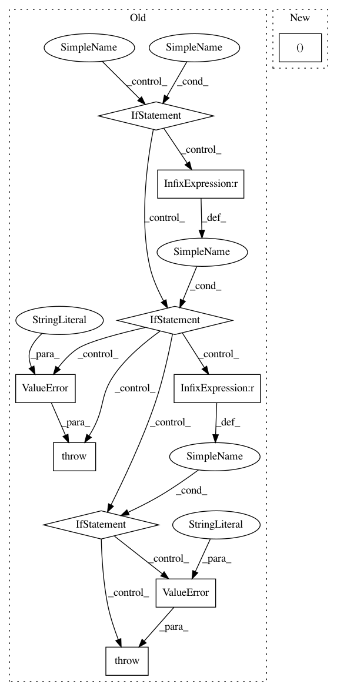

54fed17211d0b077579fba58e93075aee9312668,texar/modules/decoders/rnn_decoder_base.py,RNNDecoderBase,__init__,#RNNDecoderBase#Any#Any#Any#Any#Any#,56
Before Change
if is_callable(output_layer):
self._output_layer = output_layer
elif tf.contrib.framework.is_tensor(output_layer):
self._vocab_size = shape_list(output_layer)[1]
self._output_layer = self._make_output_layer_from_tensor(
output_layer)
elif output_layer is None:
if self._vocab_size is None:
raise ValueError(
"Either `output_layer` or `vocab_size` must be provided. "
" Set `output_layer=tf.identity` if no output layer is "
"wanted.")
with tf.variable_scope(self.variable_scope):
self._output_layer = tf.layers.Dense(
units=self._vocab_size,
use_bias=self._hparams.output_layer_bias)
else:
raise ValueError(
"output_layer should be tensor or callable layer or None."
"Unsupported type:", type(output_layer)
)
@staticmethod
def default_hparams():
Returns a dictionary of hyperparameters with default values.
After Change
self._beam_search_cell = None
// Make the output layer
self._output_layer, self._vocab_size = _make_output_layer(
output_layer, vocab_size, self._hparams.output_layer_bias,
self.variable_scope)
In pattern: SUPERPATTERN
Frequency: 3
Non-data size: 10
Instances
Project Name: asyml/texar
Commit Name: 54fed17211d0b077579fba58e93075aee9312668
Time: 2019-04-05
Author: zhitinghu@gmail.com
File Name: texar/modules/decoders/rnn_decoder_base.py
Class Name: RNNDecoderBase
Method Name: __init__
Project Name: keras-team/keras
Commit Name: 023331ec2a7b0086abfc81eca16c84a1692ee653
Time: 2017-02-09
Author: francois.chollet@gmail.com
File Name: keras/layers/convolutional.py
Class Name: Cropping3D
Method Name: __init__
Project Name: asyml/texar
Commit Name: 54fed17211d0b077579fba58e93075aee9312668
Time: 2019-04-05
Author: zhitinghu@gmail.com
File Name: texar/modules/decoders/transformer_decoders.py
Class Name: TransformerDecoder
Method Name: __init__